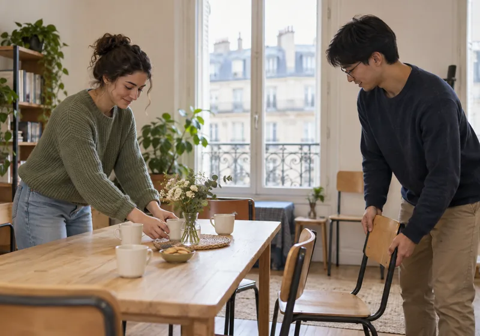
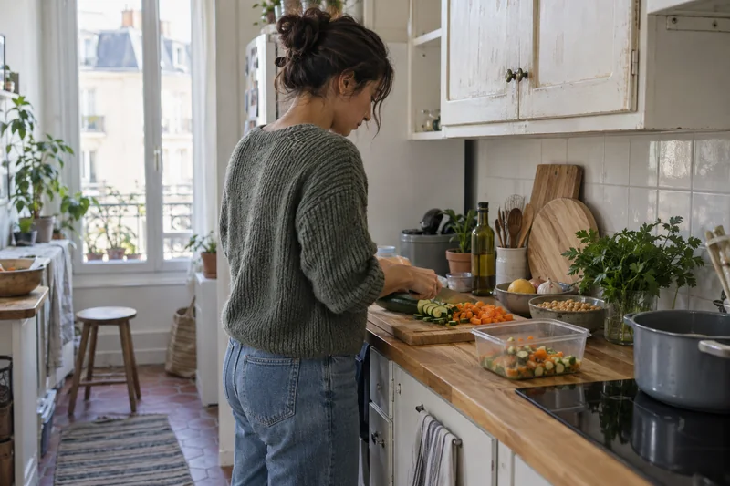
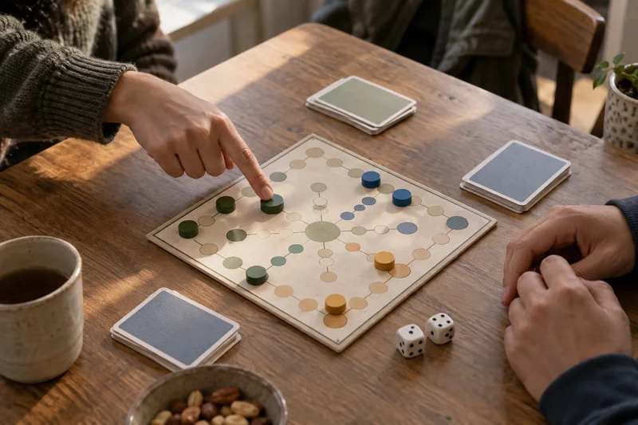
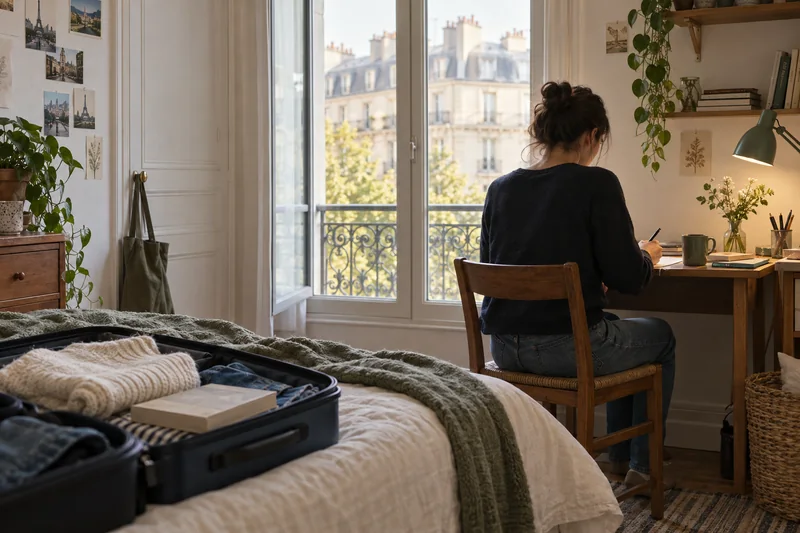
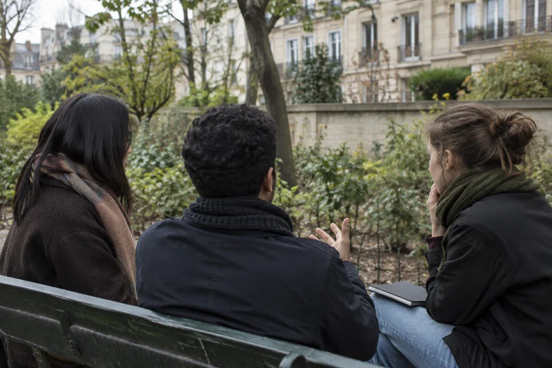
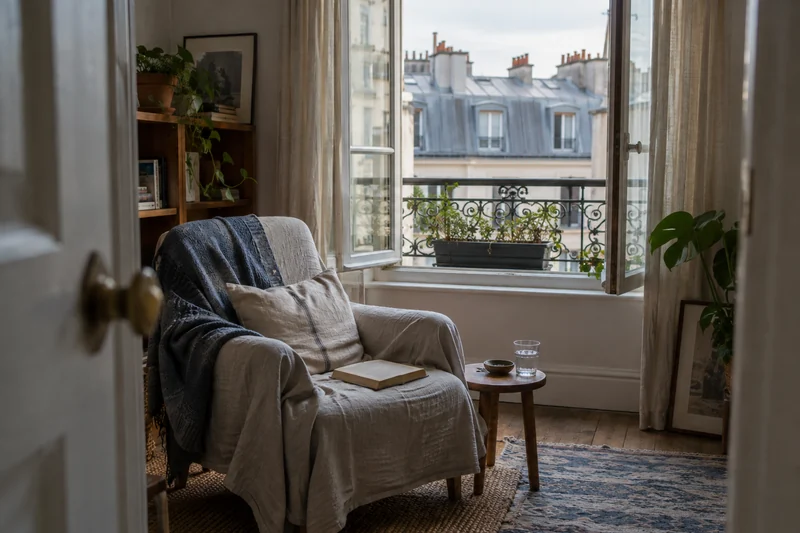
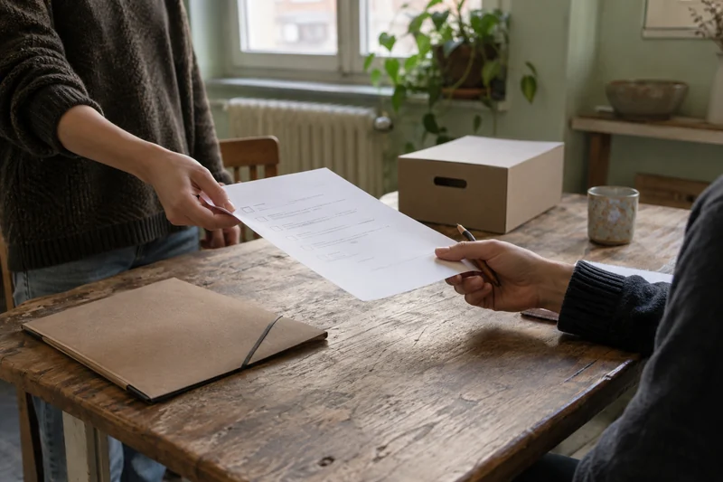
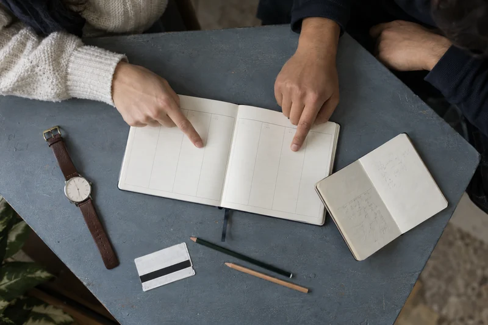

First steps, everyday discoveries, and moments that turn a new city into your city.
Demo content — these stories and authors are fictional examples. Images mix real photos from external sources with AI-generated illustrations.
SETTLING IN · 1 MIN READ
Finding my first familiar faces
By Aya Tanaka · Example story
I thought making friends would start with a big night out. For me, it started with a small table and a simple hello.
Read the story
In my first week, I could find my classroom, the supermarket, and the way back to my room. Finding people felt less straightforward. I arrived at a coffee gathering early and spent a few minutes wondering whether I should have come at all. Then someone asked if the seat beside me was free.
We talked about tiny things: a confusing bus route, a favourite snack, a gallery we wanted to visit. A few days later, I recognised two of those faces on campus. Paris started feeling smaller the moment I had someone to say hello to. The next time I went to a gathering, I was the one asking someone to sit down.
EVERYDAY PARIS · 1 MIN READ
Paris, one small routine at a time
By Mateo Silva · Example story
The city began to feel like home when I stopped trying to see everything and started returning to a few favourite places.
Read the story
I arrived with a long list of places to visit. Every free afternoon felt like a chance to tick another one off. It was exciting, but after a few weeks I realised I still felt like I was passing through. So I started taking the same short walk after class, with no particular destination.
On that walk, I found a quiet square and a café where I could read. Soon I began inviting people along. We did not need a plan or a special occasion. Those ordinary afternoons became some of my favourite memories, and the walk became the route I would show a friend who had just arrived.
GETTING INVOLVED · 1 MIN READ
The afternoon I said yes
By Lina Moreau · Example story
Helping set up one afternoon gathering gave me a reason to start conversations — and a reason to come back.

Read the story
I did not have a grand plan to volunteer. A friend needed a hand getting a small gathering ready, and I had a free afternoon. We moved chairs, put cups on a table, and wondered how many people would turn up. Having something simple to do made it easier to say hello when they arrived.
By the end, I had spoken to more people than I usually would at an event. A week later, I helped again. What kept me coming back was the feeling of contributing something, even something small. Being part of a community started, for me, with making room for someone else.
STUDENT LIFE · 1 MIN READ
A small plan for a shared kitchen
By Salma Nouri · Example story
Cooking more often started with two simple meals, a shorter shopping list, and a conversation with my flatmates.

Read the story
For my first few weeks, I bought groceries whenever I was hungry. I would return with snacks but still have nothing I wanted to cook for dinner. One Sunday, I checked what was already in my cupboard and chose two meals that could use some of the same ingredients: a vegetable pasta and a chickpea stew. I wrote a short list and left room for a different vegetable if something looked better value.
The harder part was sharing a small kitchen. My flatmates and I were often trying to cook at the same time, so we talked about when each of us usually needed the hob. We agreed to ask before using someone else's ingredients and to leave the counter ready for the next person. Sometimes we ate together; sometimes we each needed a quiet evening. My shopping costs still varied, but having a small plan made busy weekdays feel less chaotic. It was a routine I could actually keep.
MEETING PEOPLE · 1 MIN READ
Joining a game without knowing the rules
By Elias Lind · Example story
I liked board games, but walking into a room of strangers still felt difficult. A practice round gave us somewhere to start.

Read the story
I had played board games with friends before, but I nearly turned around at my first student games evening. Everyone seemed to have found a seat already. I asked whether a table had room for someone new, and one of the players pulled over a chair. They were about to start a game I had never seen. Instead of explaining every rule at once, we played a practice round and asked questions as we went.
I missed a couple of instructions and made a very bad first move. Nobody minded. Having a shared task took some pressure off finding the right thing to say, and the conversation gradually moved from the game to everyday life. I did not leave with a whole new circle of friends, but I recognised a few people the next time. Now, when I help at a gathering, I try to notice the person standing near the doorway. Offering a seat is a small thing I remember being grateful for.
ALUMNI CONNECTIONS · 1 MIN READ
Leaving Paris, keeping in touch
By Aminata Diop · Example story
Moving away changed how often I could take part. It did not have to mean losing the people I had met.

Read the story
During my last month in Paris, I kept thinking I would arrange one more coffee with everyone. Packing and deadlines soon filled the space I had left for goodbyes. I eventually invited a few friends for a short walk and asked how they preferred to stay in touch. We chose an occasional group call, knowing that not everyone would be able to join every time. I also told the community team that I was leaving and updated the contact details I wanted to share.
After the move, I could not help at events in person, but I could still answer an occasional question about my own student experience. I made it clear that replies might take a few days and passed questions about current arrangements back to people in Paris. Some conversations grew quieter; others continued in unexpected ways. Staying connected became less about being present at everything and more about making a little room for one another when we could.
NOTICING THE CITY · 1 MIN READ
Putting the camera down
By Chen Wei · Example story
On a photo walk, I kept stopping for pictures and missing the conversation. A pause gave me a different memory of the afternoon.
Read the story
The funny thing about bringing a camera on a walk is how quickly I start looking for the next picture. A doorway, a reflection, a bicycle against a wall: I would stop, adjust something, and hurry to catch up. My friends were patient, but I kept arriving halfway through their stories. When we sat down for a break, I left the camera on my lap instead of checking the photographs.
Someone was describing the long route they had accidentally taken to class. Another person pointed out a window with an enormous plant pressed against the glass. We sat there longer than I expected, watching the street and talking without a destination. I still took photographs on the way back, and some were worth keeping. But when a friend asked about the afternoon, the first thing I mentioned was that window and the conversation around it. There is no photograph of either. I had forgotten to pick up the camera.
FINDING THE WORDS · 1 MIN READ
Asking people to slow down
By Kavya Rao · Example story
I was following enough French to smile at the right moments, but not enough to join in. Saying so felt awkward, then useful.

Read the story
I can follow a short conversation in French if I know what we are talking about. Put several people together and I lose the thread much sooner. During a break with two other students, the conversation moved from classes to weekend plans before I had worked out the first topic. I almost nodded along again. Instead, I said I had missed something and asked if they could slow down a little.
One person repeated the last sentence in simpler words. We switched between French and English, and I asked a couple of questions I would normally have kept to myself. It was still tiring. I could not suddenly say everything I wanted, and sometimes I needed them to repeat something twice. Later, I wrote down one useful phrase in my notebook rather than a whole list to memorise. The next conversation was fast again, but asking for a slower pace felt less like interrupting. My French is still a work in progress.
STUDYING TOGETHER · 1 MIN READ
A study session, one small question
By Arjun Mehta · Example story
We brought different work to the same table. Most of the afternoon was quiet, with a short conversation that helped me find my next step.
Read the story
Our study afternoon had very little conversation at first. There were three of us, all working on different things, and we agreed to save questions for a short break. I had been rereading a paragraph in my course notes without understanding how two ideas connected. When we stopped, I tried to explain the gap aloud. Getting the question into a single sentence was harder than I expected.
A friend asked what I thought the first term meant. That sent me back to an earlier definition I had skimmed past. They did not know my course well enough to check the rest, so I wrote down what I still needed to ask in class. We returned to our own work. I left with a clearer question and one section finished, which was enough for that afternoon. Before packing up, we compared our free hours for the following week. Sharing a table had helped me stay with the work even when nobody was talking.
FINDING YOUR PACE · 1 MIN READ
Making room for a quiet weekend
By Beatriz Costa · Example story
After saying yes to almost every invitation, an empty Saturday felt strange. I decided to leave it empty for a while.

Read the story
My calendar looked much more social than I felt by the end of the week. I had enjoyed meeting people, but I was also behind on laundry and wanted an afternoon without checking the time. When another invitation arrived, I typed yes, deleted it, and said I would sit this one out. I suggested meeting the following week instead. Then I put my phone away before I could reconsider.
Saturday was ordinary. I washed clothes, opened the window, and read a few chapters of a book I had carried around for days. Later I went out for groceries and took the long way home. I did wonder what I was missing when the group shared photographs. I also knew I would not have enjoyed rushing through another full day. On Monday, I asked how it had gone and heard the stories over lunch. There were still things I wanted to join; I just wanted a little more space between them.
PASSING THINGS ON · 1 MIN READ
A handover that fit on one page
By Imane Benali · Example story
Before leaving a small volunteer role, I tried to write down everything. The useful version was shorter and left room for questions.

Read the story
The first draft of my handover was a long account of everything I remembered doing. Reading it back, I realised someone would need an afternoon just to find the unfinished tasks. I started again with three headings: what was still open, where to find the shared materials, and what I would check before the next gathering. I left out details that were no longer useful and marked anything I was unsure about.
Before I left, the person taking over read the page with me. Their questions showed where I had assumed too much. We added a short explanation of one folder and crossed out an outdated reminder. I offered to answer a few follow-up questions after moving, with the understanding that I might take several days to reply. They would handle new decisions with the team there. A week later, one question arrived that my notes had missed. I answered it, and they updated the page themselves. The document was already becoming theirs.
SMALL PLANS · 1 MIN READ
Making a plan people could actually join
By Yuting Lin · Example story
A group chat full of ideas was going nowhere. Two clear options made it easier to say what worked, and what did not.

Read the story
We had suggested a film, dinner, a museum, and a walk, without choosing any of them. Each new message made the plan less clear. I sent two simple options: a free walk on Saturday afternoon or a short café meet-up after class, with everyone paying for their own order. For each, I included a start time, an approximate finish, and a meeting area people could check against their journey.
The replies were more useful than before. Someone could only stay an hour; another person preferred the walk because they were watching their spending. We chose Saturday, but two friends still could not make it. I stopped trying to find a time that would suit everyone and sent the final details in one message. Four of us came. We took a shorter route than planned and said goodbye before dinner. Afterwards, I left the other option open for a different week. It felt easier to arrange something small when people knew what they were agreeing to.